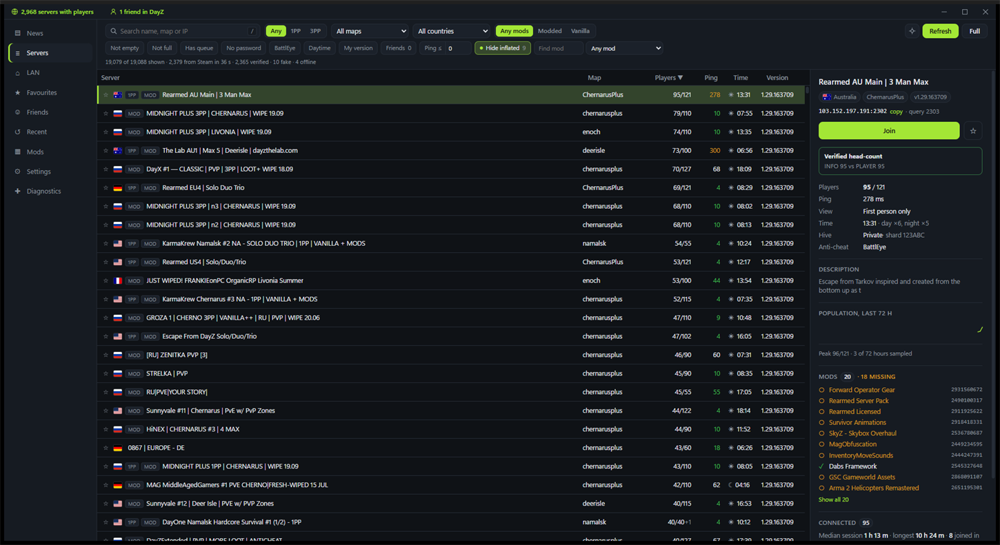

Download for WindowsFree · Windows 10 and 11
Player counts you can trust
Every populated server is asked directly and checked against Steam. The ones inflating their numbers are flagged and hidden.
Mods install themselves
Missing Workshop mods download through Steam, then the game starts through BattlEye.
Filters that matter
Perspective, hive, map, country, mods, ping, queue, version and friends playing.
Wait for a slot
On a full server, it joins the moment a place opens.
Play with friends
See which server your Steam friends are on and join them in one click.
DayZ news
The latest DayZ updates on the home page, videos included.
One-click updates
New versions install in one click, each checked against its signature first.
Private
No account and no telemetry. Nothing about you is sent anywhere.